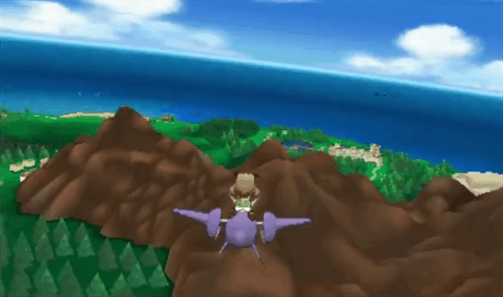

Trainer News
Ash Ketchum is Insanely Strong


Okay, so Ash kinda sucks as a Pokémon Trainer. But damn, that kid is a physical marvel. The perpetual ten year-old has showed off his muscle power in the Pokémon anime several time.In the above photo, for example, you can see him hold up Fletchinder with one arm
Pikachu Used To Be Way Cuter(and Fatter)
Pikachu, the iconic Pokémon from Pocket Monsters, looks slightly different these days. Adorable, sure, but not nearly as adorable as in 1997, back when the Pokémon anime first debuted. Not nearly as fat, either.
Over the weekend, a thread called "Pikachu in the early days was way too cute" (初期のピカチュウかわいすぎ) appeared on 2ch, Japan's largest web forum. Net users posted images from the first few anime episodes, showing just how different the round and cuddly Pikachu of yesteryear looked.
This thread isn't the first to notice Pikachu's altered appearance in the anime—and the games. For a while now, Pokémon fans have been pointing out just how different the character now looks. There's even a "Pikachu: Losing Weight Since 1998" image that's been floating around the internet for donkey's yonks.
Game News
The Pokémon Remakes Grant Players The Power Of Flight
Because there's no better time to drop fresh Pokémon news than minutes after a major preview embargo lifts, The Pokémon Company gives us "Soar" a new ability that allows players of Pokémon Omega Ruby and Pokémon Alpha Sapphire the ability to fly through the air on the backs of Mega Latias and Latios.
Securing Latios (Ruby) and Latias (Sapphire) will prove a challenge, requiring an Eon Ticket to travel to Hoenn's Southern Island in order to capture them — an Eon ticket we're not even sure how to acquire yet — but the hassle will be worth it once the pair Mega Evolve into airplanes in the night sky (like shooting stars). Note: As mentioned in comments, one the pair will be encountered once in the main story, the Eon ticket is required for picking up the other.
Once transformed, this big old jet air-Latios and Latias will allow players to fly through the skies, performing tricks and searching for special Mirage spots where incredibly rare Pokémon can be found.